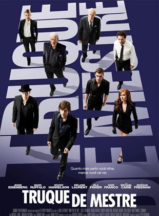

Data de Lançamento: 5 de julho de 2013
Direção: Louis Leterrier
ElencoNão recomendado para menores de 12 anos
Em Truque de Mestre, acompanhamos Daniel Atlas (Jesse Eisenberg), o carismático líder do grupo de ilusionistas chamado The Four Horsemen. O que poucos sabem é que, enquanto encanta o público com suas mágicas sob o palco, o grupo também rouba bancos em outros continentes e ainda por cima distribui a quantia roubada nas contas dos próprios espectadores. Estes crimes fazem com que o agente do FBI Dylan Hobbs (Mark Ruffalo) esteja determinado a capturá-los de qualquer jeito, ainda mais após o grupo anunciar que em breve fará seu assalto mais audacioso. Para tanto ele conta com a ajuda de Alma Vargas (Melanie Laurent), uma detetive da Interpol, e também de Thaddeus Bradley (Morgan Freeman), um veterano desmistificador de mágicos que insiste que os assaltos são realizados a partir de disfarces e jogos envolvendo vídeos.